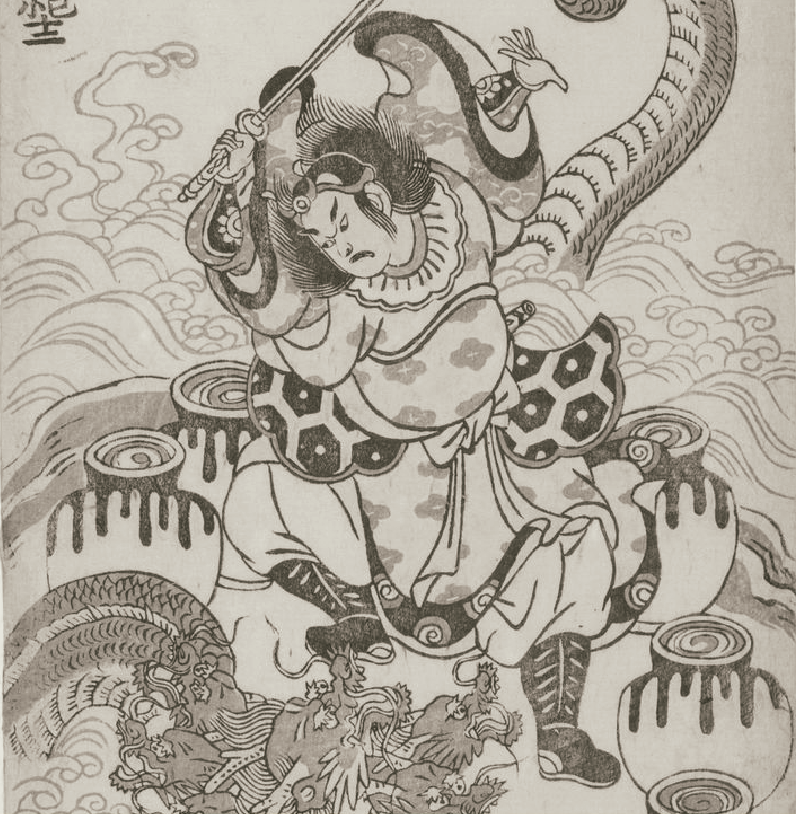

Susanoo y la serpiente
Susanoo, dios de las tormentas, salvó a una joven de la serpiente gigante Yamata no Orochi.
Para derrotarla, la emborrachó con sake y luego la venció con su espada.
Dentro del cuerpo del monstruo encontró una espada sagrada, uno de los tesoros más importantes de Japón.